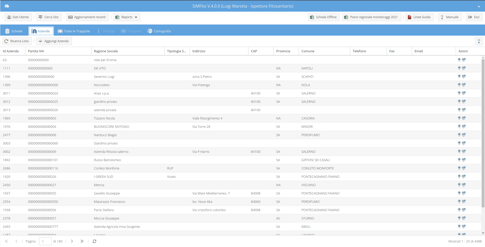
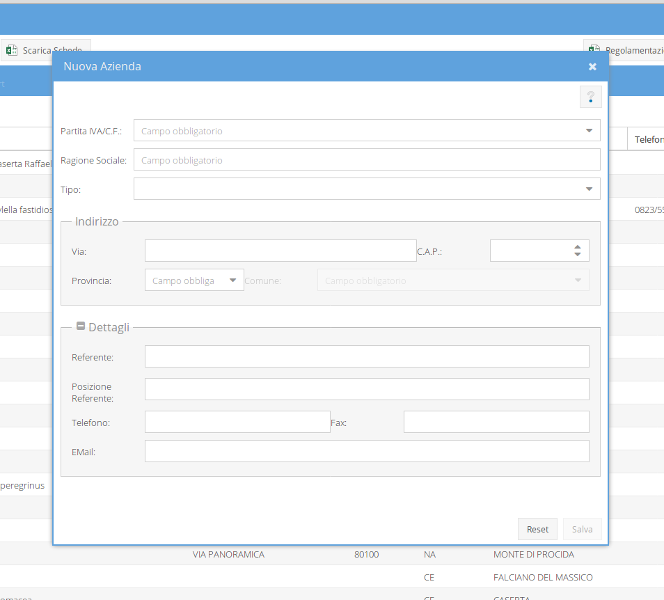
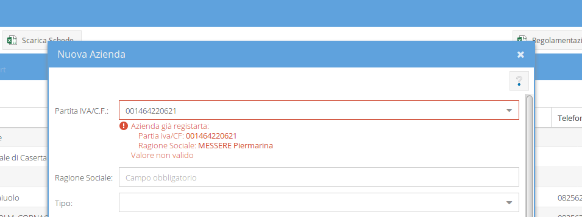
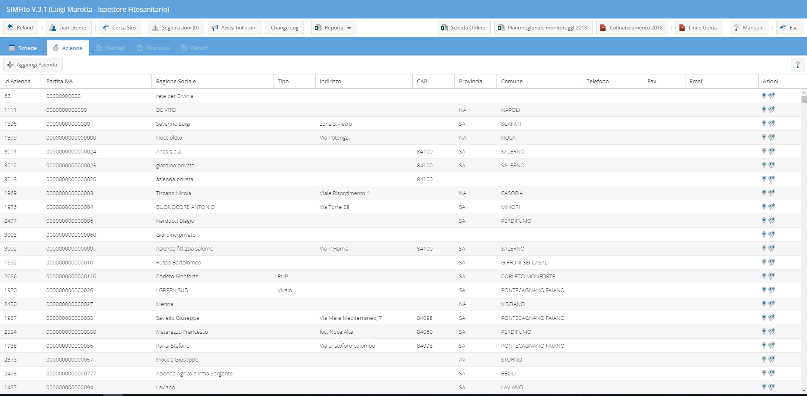
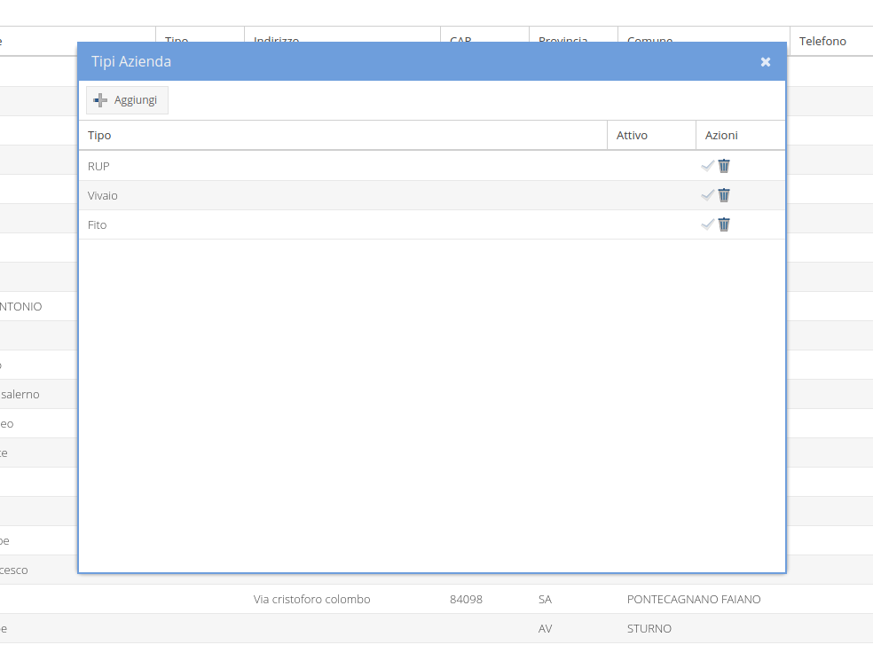
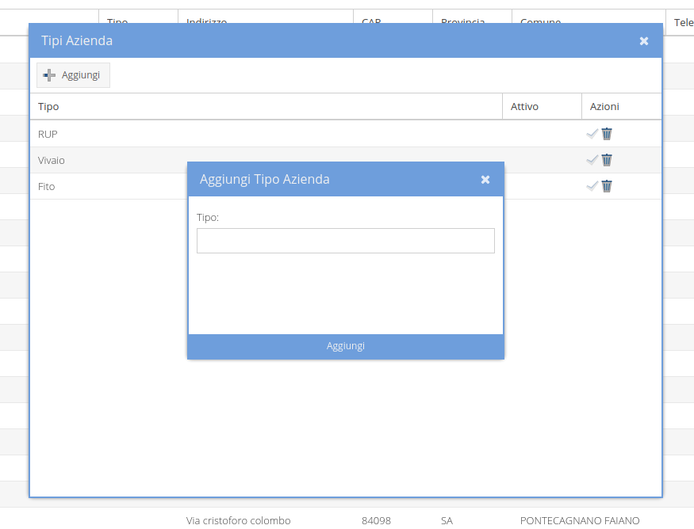

Le schede di monitoragge fanno riferimento ad un luogo geografico preciso: i siti che, a loro volta, possono appartenere ad aziende agricole vere e proprio oppure al demanio. In ogni caso, quando viene indicato un sito, esso deve essere associato necessariamente ad un'Azienda, sia essa reale o sconosciuta. La lista completa delle aziende registrate viene mostrata nel tab aziende (il secondo tab).

Le informazioni riportate, per le aziende, sono:
Nella parte superiore dell'elenco delle aziende c'è una toolbar con due bottoni: il bottone a sinistra (contrassegnato da un punto interrogativo), consente di accede a questa pagina del manuale; il bottone di destra (denominato Aggiungi Azienda), consente di aprire il form di inserimento di una nuova azienda.

Digitando la partita iva o il codice fiscale, nel relativo box del form di registarzione dell'azienda, là dove l'azienda fosse già in memoria, comparirà un messaggio al di sotto del box stesso che ne indicherà, anche, la ragione sociale. Non è possibile registrare due volte la stessa partita iva.

I campi obbligatori sono:
NB. Nel caso in cui non dovessero essere noti i dati dell'azienda di cui si vuole registrare un sito bisognerà usare, obbligatoriamente l'azienda sconosciuta!
Dal pulsante "Tipo di azinede" presente nella toolbar della griglia delle aziende (solo per Amministratore regionale), &egarve possibile accedere al form per la gestione dei tipi di azinede.

Il form permette di:

Il form presenta una toolbar col tasto per aggiungere un nuovo tipo ed una griglia con i tipi già inseriti ed una colonna delle azioni.
Per inseririe un nuovo tipo: cliccare sul tasto "Aggiungi" e compilare il form che compare.

Per disabilitare o abilitare un tipo già inserito basta cliccare sulle icone nella colonna delle azioni (check per abilitare, cestino per disabilitare), e confermare l'azione.